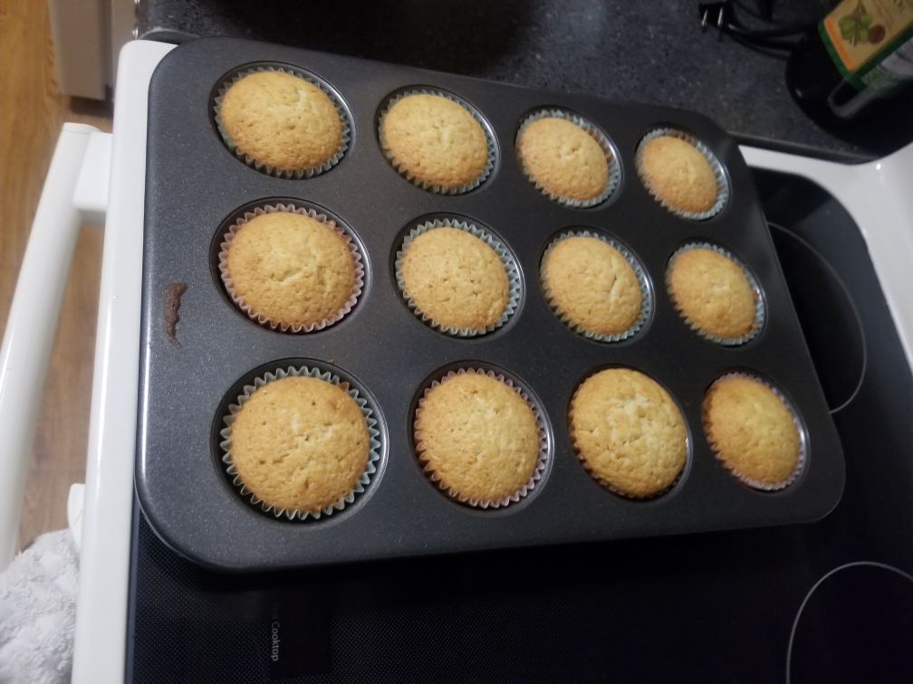

I love to bake and share my creations with others. I am a member at Pinnacle Toastmasters Club in Pittsford, New York. We meet on the second and fourth Wednesdays each month.
For each meeting, I challenge myself to bring in a baked good and to share with the club members. In addition, the baked good should have some sort of connection to the meeting's theme of the day.
Today's theme is "take me out to the ball game." This was a tricky one. I could not immediately think of a dessert that screams, "baseball!" I recalled a song by Albert Von Tilzer titled,
"Take Me Out to the Ball Game" (coincidentally the meeting's theme in verbatim). I sung the song in my head. Until I reached the line, "buy me some peanuts and cracker jacks," I suddenly had an epiphany.
I could make a cracker jack cupcake! Why stop there? I took it a step further by taking each component of what constitutes a cupcake and have it represent the different aspects of cracker jacks.
For instance, the cake itself will be made out of sweet and buttery cornbread cake to represent the popcorn. The filling will be a luscious salted caramel cream to represent the caramel.
The cupcake will be topped with a rich, peanut buttercream frosting to represent the peanuts. Finally, the cupcake will be adorned with cracker jacks popcorn on top of the frosting.
I have a simple trick I like to incorporate into my baking. Whenever a recipe calls for melted butter, I like to substitute it with brown butter such as in the cupcake batter. Brown butter is easy to prepare.
It requires you to heat butter past its boiling point, and stop once you observe brown specs forming on the bottom. Those brown specs provide rich, toasty flavors, which elevates your baked good experience
to a whole other level of flavor profiles. I strongly recommend you add it into a chocolate chip cookie recipe.
The Recipe
I get my inspiration by googling various recipes. Here is the recipe I used to create the cracker jack cupcakes with some modifications:
Cupcake
Ingredients
2 1/2 cups all purpose flour
1/2 cup cornmeal
3 teasponns baking powder
1/2 teaspoon salt
1 cup brown butter (melted)
1 cup granulated sugar
1 cup brown sugar
4 large eggs (room temperature)
2 teaspoon vanilla extract
1 cup sour cream
Directions
Preheat the oven to 350°F and line a 12 cup cupcake pan with cupcake liners.
Whisk the cake flour, cornmeal, baking powder, and salt together in a large bowl.
In a separate bowl, whisk together the brown butter, brown sugar, and granulated sugar until smooth.
Then whisk in the eggs and vanilla until fully combined. Add in the sour cream and whisk until smooth.
Gently fold in the flour mixture until fully incorporated.
Pour about 1/4 cup of batter into each cupcake liner (they should be about halfway full).
Bake at 350°F for 18-22 minutes or until a cake tester comes out clean.
Remove from pan and let brown butter cupcakes cool on wire rack.

Salted Caramel Cream
Ingredients
2 cups brown butter (room temperature)
3 1/2 cups powdered sugar
1 cup salted caramel
4 tablespoons heavy cream
Directions
In a large bowl using a handheld or stand mixer fitted with a paddle attachment, cream the butter until smooth.
Add in the powdered sugar 1/2 cup at a time until fully combined and smooth.
Set the mixer to low speed and slowly drizzle in the salted caramel until it's fully incorporated into the buttercream.
Then beat on high speed for 3-4 minutes or until the buttercream is super light and fluffy. If needed, add in cream 1 tablespoon at a time until desired consistency is reached.
After the cupcakes have cooled down, cut a small middle section of each cupcake using a knife or cake corer. Then use a spoon to scoop and fill each cupcake with the salted caramel cream
Peanut buttercream frosting
Ingredients
2 cups brown butter (room temperature)
4 cups powdered sugar
1 cup peanut butter (room temperature)
6 tablespoons heavy cream
Directions
In a large bowl using a handheld or stand mixer fitted with a paddle attachment, cream the butter until smooth.
Add in the powdered sugar 1/2 cup at a time until fully combined and smooth.
Set the mixer to low speed and slowly add in the peanut butter until it's fully incorporated into the buttercream.
Then beat on high speed for 3-4 minutes or until the buttercream is super light and fluffy. If needed, add in cream 1 tablespoon at a time until desired consistency is reached.
Frost the cupcakes, then garnish with homemade caramel popcorn and extra caramel drizzle!